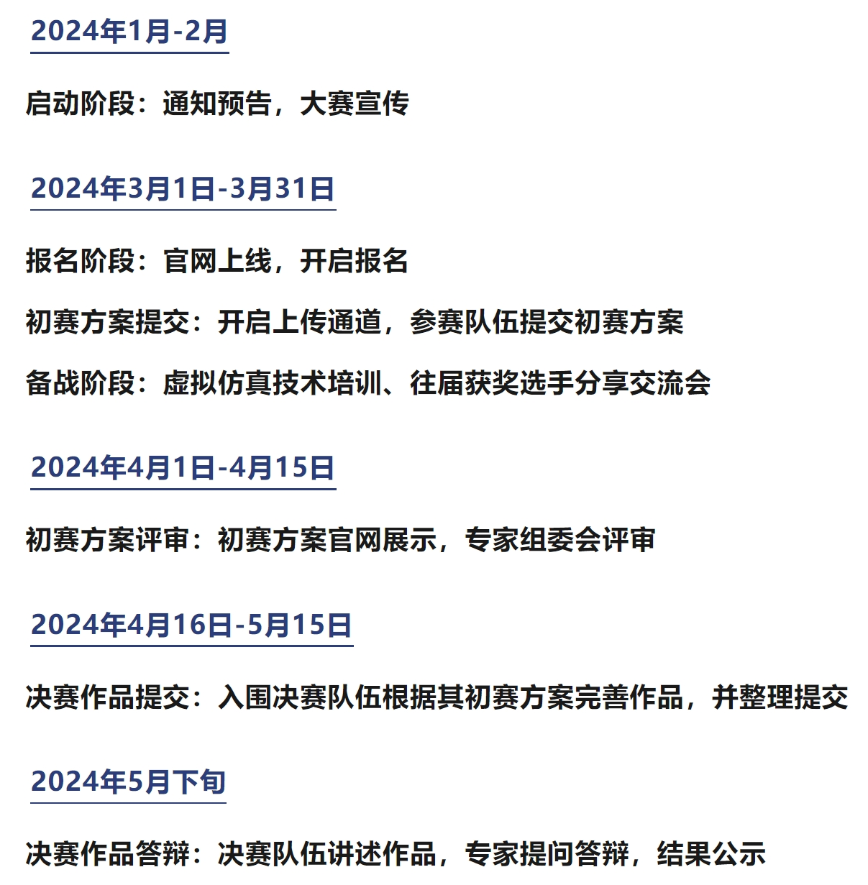

未央学术 | 叮!获得LaTeX金色技能书

00、引言
等等，你说什么？
你居然还在用word写实验报告！
你居然无法让图片乖乖听话！
你居然为了一个公式狂敲20分钟！
你居然只是改了个数据表格就变成了一团乱麻！
看来，你的lv终究还是太低了。
不过，不用担心！
未央科协向各位未小羊们赠送了金色品质的技能书——LaTeX讲座与系列推送
 小羊们，快来学习，点满技能点吧！相信在讲座和系列推送的帮助下，你们也一定能制作出像这样的高颜值的基物报告！
小羊们，快来学习，点满技能点吧！相信在讲座和系列推送的帮助下，你们也一定能制作出像这样的高颜值的基物报告！
01、LaTeX介绍
LaTeX，是一种基于TEX的排版系统，由美国计算机学家莱斯利·兰伯特（LeslieLamport）在20世纪80年代初期开发， 利用这种格式，即使使用者没有排版和程序设计的知识也可以充分发挥由TeX所提供的强大功能， 能在几天、甚至几小时内生成很多具有书籍质量的印刷品。对于生成复杂表格和数学公式，这一点表现得尤为突出。 因此它非常适用于生成高印刷质量的科技和数学类文档。
那么接下来，我们将为各位未小羊介绍LaTeX的安装，测试，并从公式、图片、表格三个方面简要讲解LaTeX的使用。 关于具体的教程，敬请期待正式的讲座。
02、配置LaTeX
一、安装LaTeX语言包
第一步：进入这个链接，下载texlive2022.iso （预计需要20-30min）
https://mirrors.huaweicloud.com/CTAN/systems/texlive/Images/
第二步：下载完成后，双击iso文件打开文件夹。找到“install-tl-windows.bat”后右键，以管理员身份运行，进入安装界面。

（注：若你使用的是vscode，那么不用安装TeXWorks前端，在下图的红圈处取消勾选。）
第三步：上图红框处为“个性化”，在左栏选择需要准备的语言。 不出意外的话我们只要中文和英文，所以如下图先点蓝框处“无”，再勾选图中三项。

另附：MacOS用户的安装指南 （1）下载地址：http://www.tug.org/mactex/点击MacTeX Download下载MacTeX.pkg文件。 或者可以从TUNA镜像站下载MaxTeX安装镜像， 链接是https://mirrors.tuna.tsinghua.edu.cn/ctan/systems/mac/mactex/（选择MacTeX.pkg）

（2）下载完成后打开访达中的下载目录，点击下载的pkg文件开始安装MacTeX。 连续点击“继续”“同意”“安装”等选项。在弹出的界面输入Mac密码开始安装软件。安装快结束时可能会弹出提示需要命令行开发者工具，点击安装。 （3）安装成功后，发现成功安装4或5个软件（有的同学没有Excalibur），将其拖入同一个分类。

二、配置vscode中LaTeX插件
第一步：在下载并装好vscode之后，在“插件”中搜索并安装LaTeX Workshop。
第二步：在vscode界面中，同时按键盘上“Fn”和“F1”，跳出搜索框，键入setjson，选择蓝框项（打开用户设置）。
随后，你会发现出现了一个名叫{}setting.json的文件，你可以向其中贴入代码。
（注：如果是只读，那么说明你选了“打开默认设置”，回到上一步重来）

第三步：接下来，在两个黄色的最外层花括号之间任意选择一个空位置，并进入下面的网站获取以下两段代码。 并贴入空位置。贴好以后点击保存。
代码网址：https://zhuanlan.zhihu.com/p/38178015
各单位请注意！！！！
不要做任何修改！不要删掉中括号。
以上便是插件的配置了，那么接下来，让我们新建第一个文件，并使用LaTeX吧！
四、大赛日程

五、竞赛方式
- 本大赛为团体赛事，须以队伍为单位报名参赛。每支参赛伍可配备参赛选手最多3名，指导教师最多2名。 每支参赛队伍的第一选手将作为领队，与大赛组委会进行对接联络；
- 本届大赛采用线上/线下结合方式进行。其中报名、初赛方案提交、决赛作品提交将在仿真秀平台赛事官网进行； 初赛方案评审、决赛作品答辩的线上平台及线下地点待后续公告确认。
- 本大赛为免费赛事，大赛组委会不收取报名费用。其它因参赛产生的食宿、差旅、软硬件及耗材费用由参赛方自行承担。
六、竞赛要求
（1）参赛人员
本届大赛的参赛选手必须是2024年度高等学校在籍研究生或本科生，指导教师须为在校专职教师。（2）组队及分组
参赛队伍由符合上述人员要求的群体自行组成。每个参赛选手仅可加入1支参赛队伍，每个指导教师可最多同时指导2支参赛队伍。 大赛分为研究生赛道和本科生赛道，赛道确定以组内全部选手中最高学历为准。（3）队伍变更
参赛队伍报名确认后不得随意变更。如在大赛过程中出现成员因故无法参赛、成员替换、成员补充（需有相应名额剩余）等情况， 需由参赛队伍所属单位出具书面申请说明，并最晚于决赛作品答辩开赛10个工作日之前提交至大赛组委会，经核实后确认变更。 若参赛队伍整体无法参赛，则视为自动放弃竞赛。（4）报名参赛
参赛队伍领队须将队伍成员的报名参赛信息及材料如实提交至大赛官网。 参赛队伍成员应始终与提交确认的信息保持一致，并在各个比赛环节进行确认。（5）方案及作品
参赛队伍须签署《作品真实性及版权使用授权承诺书》等相关材料。 参赛队伍领队须在对应比赛环节将方案、作品及相关材料提交至大赛官网。 参赛队伍不可直接使用过往公开赛事中已参赛的方案或作品，可在其基础上进行创新修改，或重新设计。 方案或作品文档中不得包含参赛队伍的单位、人员及其它可能泄露参赛对象的信息。七、评审规则
大赛设置总分值100分，其中初赛方案评审分值50分，决赛作品答辩分值50分。各参赛队伍采取分步得分、 累计总分的计分方式，分别计算各环节分值，累计相加得出总成绩。总成绩相同队伍，以决赛分值较高者获胜。
八、奖项设定
 进入决赛其余选手均颁发优秀奖证书，获得二等奖及以上队伍的指导教师颁发优秀指导教师证书。
奖项设置会根据参赛队伍数量和参赛作品质量做适当调整。
进入决赛其余选手均颁发优秀奖证书，获得二等奖及以上队伍的指导教师颁发优秀指导教师证书。
奖项设置会根据参赛队伍数量和参赛作品质量做适当调整。
九、报名方式
请扫描下方二维码填写报名问卷，并加入赛事通知群聊，更多资讯将在群内公布！

十、联系方式
在竞赛过程中有任何比赛相关的问题，可联系大赛组委会对应负责的工作人员联系咨询，以下为大赛组委会联系方式。
- 耿老师：
- qhgzt@tsinghua.edu.cn
- 王老师：
- wangyuanhang@mail.tsinghua.edu.cn
- 咨询电话：
- 010-52167830
010-62773749 - 微信客服：
- fangzhenxiu555
- 联系邮箱：
- OSE@fangzhenxiu.com